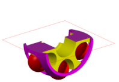
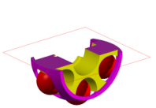
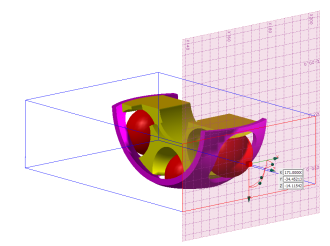

Display Settings
There are six Display Settings:
Type (available only when using One Plane)
Section option displays a normal section; Slice option show a 2D cut.
|
|


 Show Manipulator
Show Manipulator
Displays the manipulator axis block in the graphics area for manipulation of section planes.
|
|
 
 Move Manipulator in View
Move Manipulator in View
Centers the manipulator within the view.
 Orient View to Plane
Orient View to Plane
View the model where the section plane is parallel to the screen.
|
|

 Show Grid
Show Grid
When selected, a grid is available in the graphics area; it is linked to the manipulator.

 Edit Grid Settings
Edit Grid Settings
Brings up the Plane Grid dialog box where line spacing, attributes and labeling can be designated.